MÓDULO 2 : Tratamiento de los estadios precoces

2.3 Quimioterapia adyuvante en estadios precoces
Los estudios de adyuvancia que se llevaron a cabo durante los años 80 tuvieron resultados discordantes.
La mayoría de estos estudios utilizaban agentes alquilantes únicos o combinaciones de quimioterapia que habían demostrado mínima actividad en enfermedad metastásica.
En 1995, se publicó el meta-análisis llevado a cabo por el "Non-Small Cell Lung Cancer Collaborative Group" (NSLCCG) Se analizaron 14 estudios (4357 pacientes y 2574 muertes) en los que se comparaba cirugía exclusiva versus cirugía seguida de quimioterapia.
En ocho de estos estudios (1394 pacientes) en los que se había utilizado una combinación de quimioterapia basada en cisplatino se observó una reducción del riesgo de muerte del 13%, con un beneficio absoluto en supervivencia del 3% a los 2 años y del 5% a los 5 años para los pacientes que recibieron quimioterapia (Hazard Ratio [HR] 0,87; P = 0,08).
Adyuvancia en CNMP: Meta-análisis de regímenes de quimioterapia con cisplatino
Se analizaron 8 ensayos con quimioterapia basada en cisplatino (n = 1394).
• Los pacientes se randomizaron a cirugía sola o cirugía + quimioterapia adyuvante.
13% de reducción en el riesgo de muerte con cirugía + quimioterapia adyuvante vs cirugía sola (P = .08).
Non-Small Cell Lung Cancer Collaborative Group. BMJ 1995;311:889-890
Se analizaron tres estudios que utilizaban tegafur ó UFT (818 pacientes) y se observó un beneficio absoluto a los 5 años del 4%, con una reducción en el riesgo de muerte del 11%. Sin embargo cuando se analizaron los cinco estudios que utilizaron agentes alquilantes (2145 pacientes) se observó un incremento en el riesgo de muerte para los pacientes que recibieron quimioterapia (P = 0,005). Los resultados de este meta-análisis se resumen en la siguiente tabla.
Resultados del Meta-Analysis de 1995 de NSCLCCG:
Tras la publicación del meta-análisis se iniciaron varios estudios randomizados:
North American Intergroup Trial INT0115
El North American Intergroup Trial INT0115 es el único estudio que analiza los efectos de la quimioterapia al añadirla a la radioterapia postoperatoria.
En este estudio se randomizaron 488 pacientes con estadios II-III y resección quirúrgica completa a recibir etopósido/cisplatino y radioterapia torácica versus radioterapia torácica exclusiva y demostró que no había diferencias significativas en la supervivencia entre los pacientes que recibieron quimioterapia/radioterapia y los que recibieron radioterapia.
ALPI (Adjuvant Lung Project Italy)
Otro estudio relevante es el denominado ALPI (Adjuvant Lung Project Italy). En este estudio, 1209 pacientes con resección quirúrgica completa y estadio I-IIIA se randomizaron a recibir tres ciclos de cisplatino/mitomicina/vindesina versus no tratamiento. El estudio estaba diseñado para detectar una reducción relativa en el riesgo de muerte del 20%. La mediana de supervivencia fue de 48 meses para los pacientes del grupo control y de 55,2 meses para el grupo de quimioterapia (HR 0,96; P = 0,6). Sólo un 69% de los pacientes randomizados a quimioterapia recibieron los tres ciclos y un 43% de los pacientes en los dos brazos recibieron radioterapia postoperatoria.
"Big Lung Trial" (BLT)
El "Big Lung Trial" (BLT) tampoco demostró una efectividad de la quimioterapia adyuvante. En este estudio se comparó cirugía sola versus cirugía seguida de quimioterapia basada en cisplatino en 381 pacientes con resección completa estadios I, II y III. Sólo el 14% de los pacientes recibieron radioterapia postoperatoria como parte del tratamiento planificado. En este estudio no se definió la calidad de la resección y el cumplimiento de la quimioterapia fue muy pobre. Tras una mediana de seguimiento de 34,6 meses no había diferencias entre los dos grupos en mediana de supervivencia y supervivencia libre de progresión.
IALT (International Adjuvant Lung Cancer Collaborative Group Trial)
El estudio IALT (International Adjuvant Lung Cancer Collaborative Group Trial) es el estudio más grande de adyuvancia publicado, y es uno de los que ha cambiado el estándar actual en estos pacientes.
Quimioterapia adyuvante basada en cisplatino en CNMP tras resección completa:
Beneficio en supervivencia observada con quimioterapia vs no quimioterapia:
En este estudio, 1867 pacientes con cáncer de pulmón, estadio patológico I-III y resección quirúrgica completa se randomizaron a recibir quimioterapia después de la cirugía versus no tratamiento.
El objetivo primario fue la supervivencia global tras la randomización. Este estudio se diseñó para demostrar un incremento absoluto en la supervivencia del 5% a los 5 años con quimioterapia adyuvante, en base a confirmar la hipótesis del meta-análisis publicado en 1995. Aquellos pacientes que se randomizaron a quimioterapia recibieron 3-4 ciclos de cisplatino (80-120 mg/m2) con etopósido, vinorelbina, vinblastina ó vindesina. Aproximadamente el 25% de los pacientes recibió radioterapia postoperatoria.
Importante: 5 años para los pacientes que recibieron quimioterapia adyuvante era del 44,5%, comparado con el 40,4% de los pacientes tratados con cirugía exclusiva (HR 0,86; P < 0,03). Además, la supervivencia libre de enfermedad a 5 años fue del 39,4% en pacientes que recibieron quimioterapia adyuvante, comparado con el 34,3% en pacientes tratados con cirugía exclusiva (P < 0,003). Los investigadores no identificaron un subgrupo de pacientes que se beneficiara más de la quimioterapia adyuvante, aunque en un análisis por subgrupos, el beneficio fue superior para pacientes con estadio III (figura).
El beneficio absoluto en supervivencia a 5 años del 4,1% es concordante con la estimación del meta-análisis.
IALT: Interacción con el estadio
JBR.10
En el estudio JBR.10 publicado por Winton y cols. se comparó cirugía seguido de quimioterapia adyuvante con cisplatino/vinorelbina versus cirugía exclusiva en 482 pacientes con estadios patológicos IB y II.
JBR.10: Cisplatino + vinorelbina adyuvante en CNMP resecado
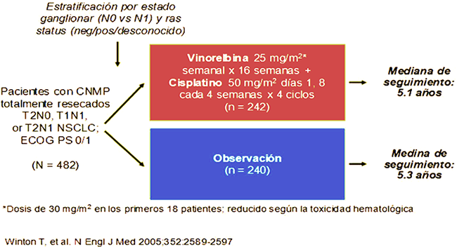JBR.10: Beneficio en la supervivencia con vinorelbina + cisplatino en pacientes con CNMP resecados
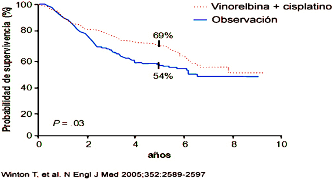En este estudio no se administró radioterapia postoperatoria. La mediana de supervivencia en el grupo de pacientes que recibieron quimioterapia fue de 94 meses, comparado con 73 meses en el grupo control (HR 0,69; P = 0,009). En el grupo de quimioterapia adyuvante había un 15% de beneficio absoluto en la supervivencia a 5 años (P = 0,03).
Un análisis por subgrupos reveló que los pacientes que más se beneficiaban de la quimioterapia adyuvante eran aquéllos con estadio II, mientras que en los pacientes con estadio IB no se observó beneficio en la supervivencia.
JBR.10: Supervivencia según estadio
El papel beneficioso de la quimioterapia adyuvante ha sido confirmado con los resultados del estudio ANITA.
ANITA: Vinorelbina + cisplatino adyuvante vs observación
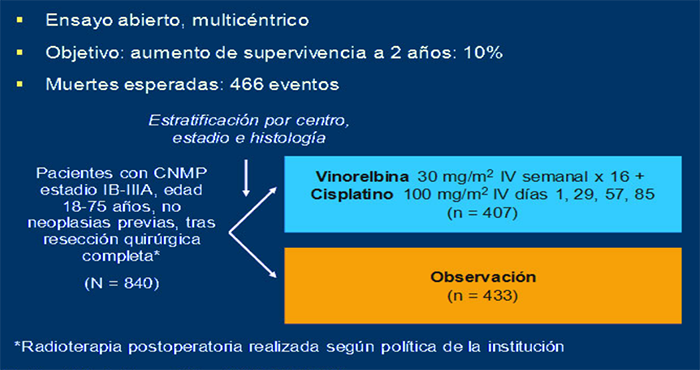ANITA: Beneficio en la supervivencia con vinorelbina adyuvante en pacientes con CNMP resecados
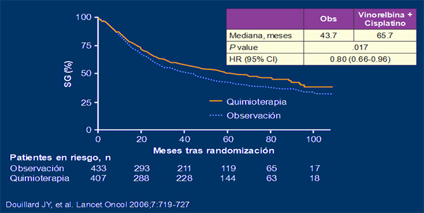En este estudio, 840 pacientes con resección completa y estadio patológico IB-IIIA fueron randomizados a recibir cuatro ciclos de quimioterapia adyuvante con vinorelbina/cisplatino versus no tratamiento.
La mediana de supervivencia para los pacientes randomizados a cirugía exclusiva fue de 43,8 meses versus 65,8 meses para aquellos que recibieron quimioterapia. Hubo un 8% de mejoría en la supervivencia a 5 años para aquellos pacientes que recibieron quimioterapia adyuvante (P = 0,013).
De forma similar al estudio Canadiense, en el estudio ANITA, un análisis exploratorio no demostró beneficio en la supervivencia en los pacientes estadio IB que recibieron quimioterapia adyuvante.
ANITA: Supervivencia según estadio
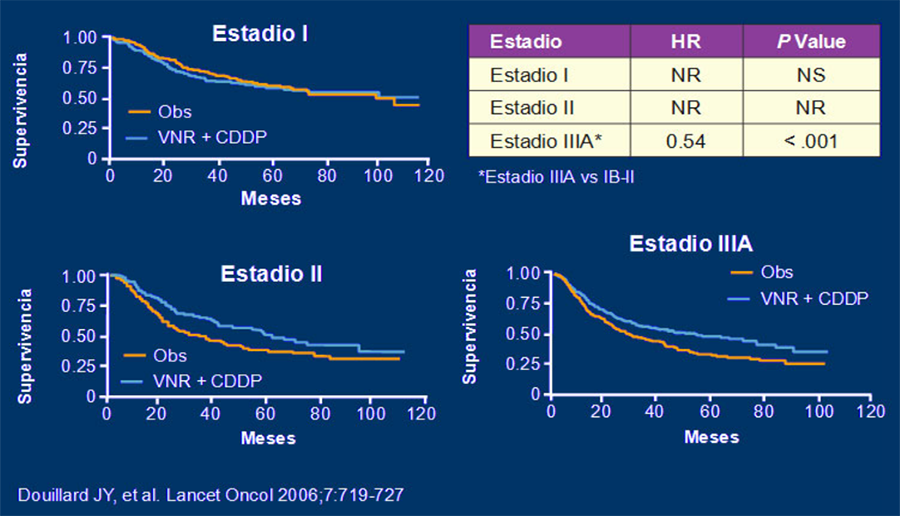META-ANÁLISIS LACE
En el año 2006 se presentaron en ASCO los resultados del meta-análisis denominado "LACE" (figuras). Se analizaron los datos de 4584 pacientes incluidos en 5 estudios randomizados de adyuvancia en cáncer de pulmón realizados tras la publicación del meta-análisis de 1995, y en los cuales el brazo de tratamiento incluía esquemas basado en cisplatino (estudios ALPI, ANITA, BLT, IALT y JBR10). La mediana de seguimiento de los pacientes fue 5,1 años, mediana de edad de 59 años, el 80% eran hombres, al 31% se les practicó una neumonectomía y el 49% tenían un carcinoma escamoso. El beneficio absoluto de la quimioterapia adyuvante en supervivencia fue de un 3,9% a 3 años y de un 5,3% a 5 años.
Entre los pacientes tratados con cisplatino- vinorelbina, hubo un aumento en SG a 5 a de 8.9% (HR 0.8(IC 95% 0.70-0.91)).
El beneficio variaba en función del estadio y los resultados por estadios fueron: estadio IA HR (1,41); estadio IB (HR 0,93); estadio II (HR 0,83); y estadio IIIA (HR 0,83).
LACE meta-análisis de quimioterapia adyuvante: Efecto de la quimioterapia según el estadio
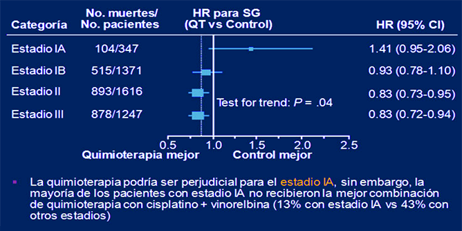Meta-análisis LACE: adyuvancia vs no adyuvancia
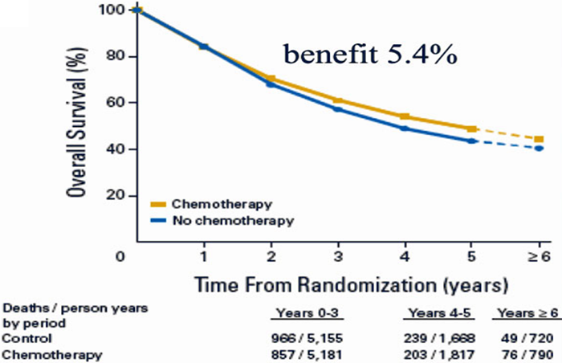CALGB 9633:
En el estudio CALGB 9633, 344 pacientes con estadio IB patológico tras la cirugía se randomizaron a control versus 4 ciclos de carboplatino/paclitaxel; 330 pacientes fueron elegibles.
CALGB 9633: Quimioterapia adyuvante en CNMP estadio IB
El tratamiento de quimioterapia adyuvante fue bien tolerado. Con una mediana de seguimiento de 57 meses, la mediana de supervivencia fue de 78 meses para el grupo control versus 95 meses para el grupo de quimioterapia adyuvante (HR 0,8; P = 0,1). La supervivencia libre de enfermedad fue superior para los pacientes que recibieron quimioterapia adyuvante (HR 0,74; P = 0,003).
Se realizó un análisis exploratorio previamente no planeado y se observó que los pacientes con tumores > 4 cm. presentaban una mejor supervivencia si recibían quimioterapia adyuvante (HR 0,66; P = 0,004). Esto no sucedió en los pacientes con tumores < 4 cm (HR 1,02; P = 0,51). Destacar que en la nueva clasificación TNM8, los tumores > 4 cm son clasificados como estadio IIA.
CALGB 9633: Supervivencia según tamaño del tumor
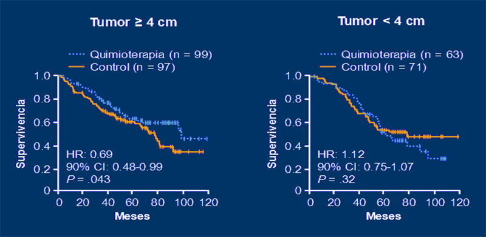UFT:
UFT ha sido analizado en el tratamiento adyuvante de pacientes con cáncer de pulmón, principalmente en Japón. Investigadores de "Tokyo Medical University" condujeron un estudio con cerca de 1000 pacientes con adenocarcinoma de pulmón y estadio patológico I en la cirugía (T1N0M0; T2N0M0) y los randomizaron a recibir UFT oral durante dos años versus no tratamiento. El objetivo primario era encontrar diferencias en la supervivencia global. Menos del 3% de los pacientes en el grupo tratado con UFT presentaron efectos secundarios.
Importante: El estudio demostró que la supervivencia a 5 años para los pacientes que recibieron UFT fue del 87,9%, comparada con el 85,4% para los pacientes que no recibieron quimioterapia. Los datos con UFT no se han confirmado fuera de Japón, por lo que no se sabe si hay una sensibilidad genética específica al UFT en la población japonesa.
Conclusiones
A pesar de un tratamiento quirúrgico adecuado, una alta proporción de pacientes con carcinoma de pulmón localizado intervenido acaba recayendo sobre todo a distancia, lo que establece la necesidad de tratamiento sistémico adyuvante.
Entre los años 2003 y 2005, tres estudios randomizados (IALT, JBR.10 y ANITA) validaron el papel de la quimioterapia adyuvante basada en cisplatino en pacientes con cáncer de pulmón resecado, sobre todo, en estadios patológicos II-III. Los resultados de estos tres estudios positivos, en los que el brazo de quimioterapia incluye combinaciones con cisplatino, se resumen en la siguiente tabla.
En base a la magnitud clínica del beneficio en supervivencia demostrado en estos estudios, la quimioterapia adyuvante con un doblete de platino se ha convertido en tratamiento estándar de los pacientes intervenidos de carcinoma de pulmón en estadios II y III.
Estudios positivos de adyuvancia con esquemas de cisplatino
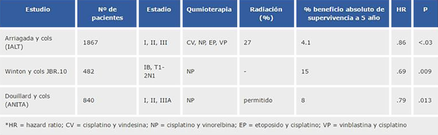QT adyuvante en estadio IB
Los resultados negativos del estudio CALGB (el único que incluye únicamente pacientes con estadio IB y utiliza una combinación con carboplatino, aunque con una muestra relativamente pequeña de pacientes), así como los análisis exploratorios de los estudios IALT, JBR.10 y ANITA en los pacientes con estadio IB, hacen que en estos momentos la contribución de la adyuvancia en pacientes con estadio patológico IB sea un motivo de controversia.
Para averiguar si el beneficio de la quimioterapia adyuvante es duradero, varios de los estudios anteriores han sido recientemente actualizados. El estudio IALT ha actualizado recientemente los resultados a largo plazo y el beneficio en la supervivencia de la quimioterapia adyuvante no persiste una vez superados los 5 años (HR = 0.91: P = 0.10).
Resultados a largo plazo IALT: Supervivencia con una mediana de seguimiento de of 7.5 años
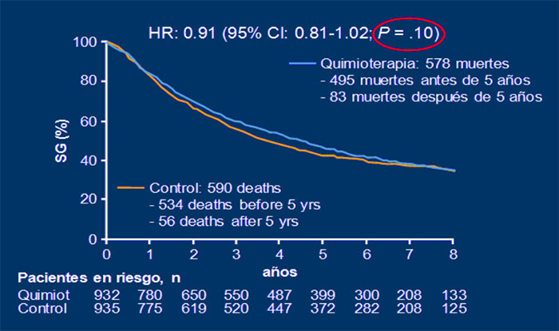Los investigadores del estudio IALT han tratado de determinar la causa de esta pérdida de beneficio a los 5 años investigando si los pacientes desarrollaron metástasis y/o fallecieron de cáncer de pulmón en el brazo de quimioterapia adyuvante, pero no fue éste el caso, de hecho, los pacientes que recibieron quimioterapia adyuvante desarrollaron menos metástasis a distancia que los pacientes en el brazo control. Además, hubo una tendencia no significativa hacia una mayor mortalidad no debida a cáncer de pulmón en el brazo de quimioterapia (P = 0.06) aunque no queda claro en este estudio la causa de esta mortalidad no debida a cáncer.
Resultados a largo plazo IALT. Resultados adicionales
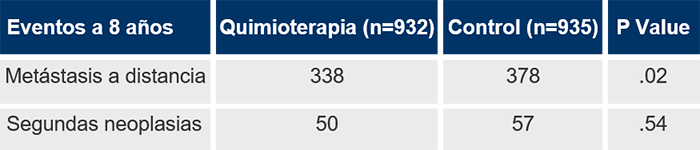No parece que hubiera una pérdida del beneficio en términos de mortalidad por cáncer de pulmón y la disminución de la mortalidad por cáncer de pulmón se mantuvo más allá de los 7,5 años. La pérdida del beneficio de la quimioterapia no fue debida a segundos tumores.
El ensayo JBR.10 también ha actualizado recientemente los datos de supervivencia, demostrando que el beneficio de la quimioterapia adyuvante persiste en el tiempo. La mediana de supervivencia en el brazo de quimioterapia fue de 7,8 años, mientras que en el brazo de observación fue de 6,0 años (HR = 0.8; P = 0.04). Se encontró una tasa de mortalidad debida al cáncer de pulmón mayor en el brazo de observación y, al contrario que en el estudio IALT, no se encontró un aumento de la mortalidad no debida a cáncer entre los dos brazos.
Quimioterapia adyuvante en pacientes con estadios precoces:
• Se recomienda la administración de quimioterapia adyuvante en estadios II-IIIA y existen dudas en pacientes con estadio IB, especialmente aquellos con tumores mayores de 4 cm.
• Se recomienda la administración de 3-4 ciclos de un doblete basado en cisplatino, debiendo iniciar dicho tratamiento de 4 a 8 semanas tras la cirugía.
• La mayoría de los ensayos ha utilizado vinorelbina como fármaco en combinación con cisplatino. No existen datos suficientes con otros fármacos de tercera generación.
PEMETREXED
Distintos estudios fase II, han evaluado el papel de pemetrexed en combinación con cisplatino o carboplatino como tratamiento adyuvante, con similares datos de eficacia y buen perfil de tolerabilidad, si bien no tiene indicación en ficha técnica.
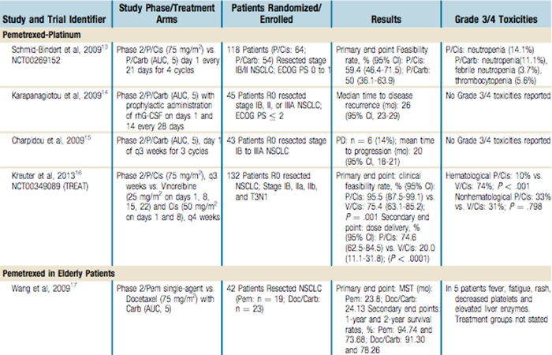Otra estrategia terapéutica en estadios iniciales es la realización de quimioterapia neoadyuvante. Las ventajas teóricas atribuidas a este tratamiento frente a la administración postoperatoria, son la posibilidad de obtener una regresión tumoral que facilite la resección quirúrgica y el tratamiento precoz de las micrometástasis.
Depierre y cols llevaron a cabo un estudio fase III de neoadyuvancia que incluía pacientes con estadio IIIA(N2), pero también pacientes con estadios I (excepto T1N0) y II. Un total de 373 pacientes fueron aleatorizados a recibir dos ciclos de mitomicina/cisplatino/ifosfamida seguido de cirugía frente a cirugía sola. En este estudio se incluyeron un total de 167 pacientes (47%) con estadio IIIA, el resto eran pacientes con estadio I-II.
Globalmente, la tasa de respuestas fue del 64% en el grupo de quimioterapia con una mejoría de la mediana de supervivencia de 11 meses (37 meses versus 26 meses, P = 0,15), reducción de la aparición de metástasis (P = 0, 009) y aumento significativo de la supervivencia libre de enfermedad (P= 0,033) en el brazo de neoadyuvancia.
Aunque las diferencias clínicas observadas en la mediana de supervivencia eran clínicamente relevantes, no fueron estadísticamente significativas. En un análisis exploratorio, en el subgrupo de pacientes N0 y N1, sí hubo una mejoría de supervivencia para los pacientes que recibieron quimioterapia neoadyuvante (P = 0,033).
El estudio del "Bimodality Lung Oncology Team" (BLOT), es un estudio fase II que incluyó 94 pacientes con estadio precoz (IB-II-T3N1) que recibieron dos ciclos de quimioterapia neoadyuvante con paclitaxel/carboplatino. Se observó una respuesta a la quimioterapia en el 53% de los pacientes. Después de la quimioterapia el 94% de los pacientes fueron sometidos a cirugía y en el 86% de los casos se realizó resección completa. La supervivencia a los tres años fue del 58% y a los 5 años del 45%.
Un estudio norteamericano (SWOG 9900) comparó tres ciclos de quimioterapia de inducción (con el mismo esquema del BLOT) seguido de cirugía versus cirugía exclusiva en pacientes con estadios IB, II y T3N1. Debido a los resultados de los estudios de quimioterapia adyuvante, este estudio se cerró con sólo 354 pacientes incluidos, ya que se consideró que no era ético que los pacientes se randomizaran a un brazo sin tratamiento de quimioterapia.
Los resultados preliminares demostraron respuestas completas en un 3% de pacientes y parciales en el 38% tras el tratamiento de quimioterapia. Aunque los datos favorecieron la neoadyuvancia, no hubo diferencias significativas en términos de supervivencia global (mediana de supervivencia 62 meses para los pacientes que recibieron quimioterapia neoadyuvante versus 41 meses para los pacientes con cirugía exclusiva HR = 0,79; 95% CI, 0.60 - 1.06; P = 0,11.
En 2010 se publicó el estudio NATCH del Grupo Español de Cáncer de Pulmón. En este ensayo 624 pacientes con estadios I, II y T3N1 fueron randomizados a cirugía versus tres ciclos de quimioterapia neoadyuvante con carboplatino/paclitaxel seguido de cirugía versus cirugía seguido de tres ciclos de quimioterapia adyuvante. El objetivo principal del estudio fue la comparación de la supervivencia libre de enfermedad.
Ensayo fase III NATCH: Paclitaxel + carboplatino adjuvante vs preoperatorio vs cirugía sola
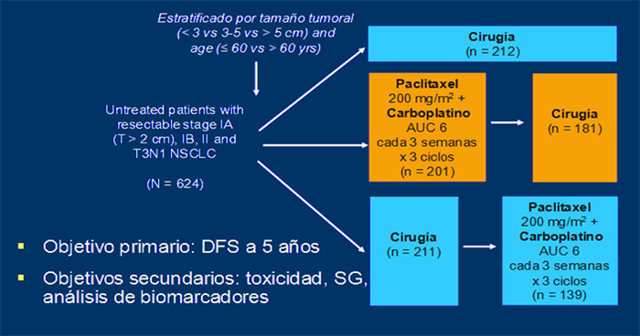Los resultados de este estudio han sido negativos, no existieron diferencias en la supervivencia libre de progresión ni en la supervivencia global entre los tres brazos de tratamiento. Si hubo una tendencia no significativa al aumento de SLE en el brazo de QT preoperatoria. La tasa de resecabilidad, los procedimientos quirúrgicos y la mortalidad post-operatoria fue similar en los tres brazos (figura), sin embargo, un mayor número de pacientes recibió quimioterapia en el brazo de quimioterapia preoperatoria. Las causas por las que los resultados no han sido positivos pueden ser debidas al uso de carboplatino, al uso de paclitaxel o a que la mayoría de los pacientes tenían estadios muy precoces.
Ensayo fase III NATCH: Resultados
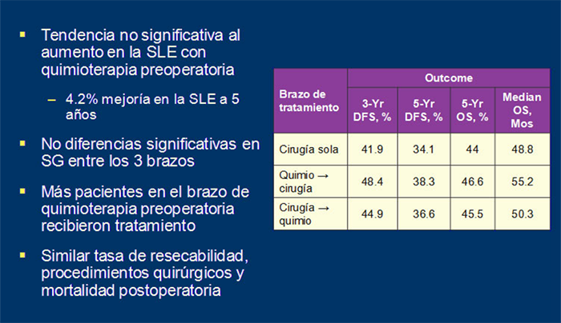De hecho, la mayoría de los pacientes tenían estadio I, que son precisamente los que menos beneficio obtienen con la quimioterapia adyuvante.
NATCH: Estadios clínicos de los pacientes reclutados
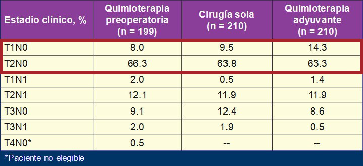